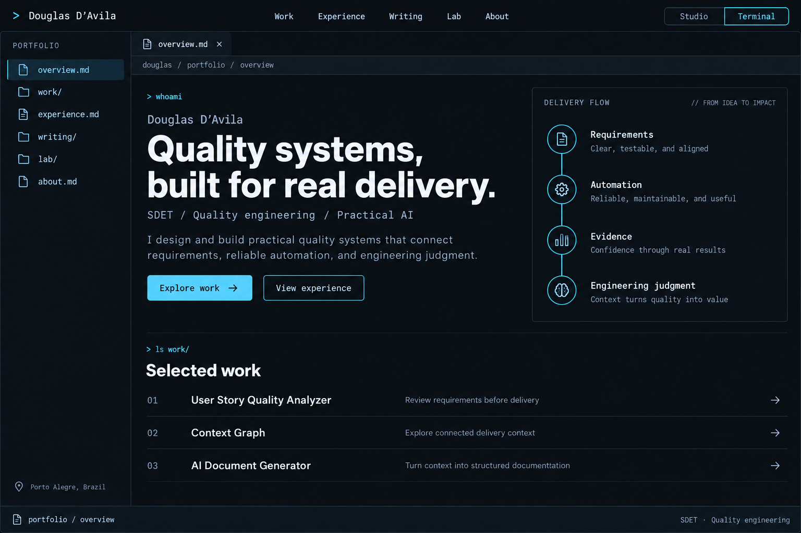
Home
/Page design notes
Original Terminal direction: introduction, delivery flow and selected work.
DESIGN REFERENCES · SEPTEMBER 2026
18 desktop mockups covering the complete site. Select an image to inspect it at full size. These are proposed visual references; the written specification governs exact content, controls, routes, mobile behavior and animation.

/Original Terminal direction: introduction, delivery flow and selected work.
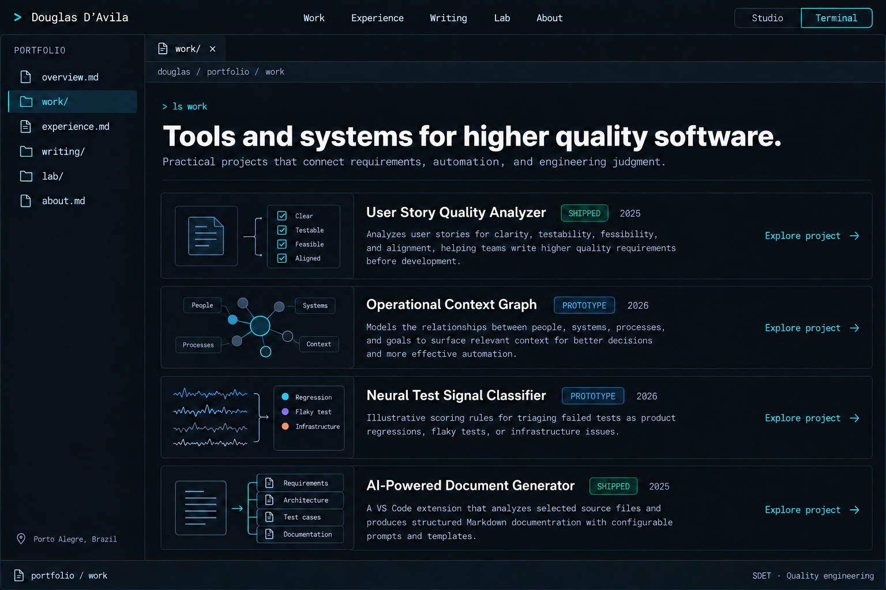
/workProject directory with heading Tools and systems for higher quality software. Four spacious project rows with small distinct schematic previews: User Story Quality Analyzer (shipped, 2025); Operational Context Graph (prototype, 2026); Neural Test Signal Classifier (prototype, 2026); AI-Powered Document Generator (shipped, 2025). Each has concise description and Explore project link. Use technical status labels not fake metrics.
Rows link to the existing case-study URLs; diagrams are labeled illustrations. Preserve collection descriptions and statuses. Stack preview above text on mobile.
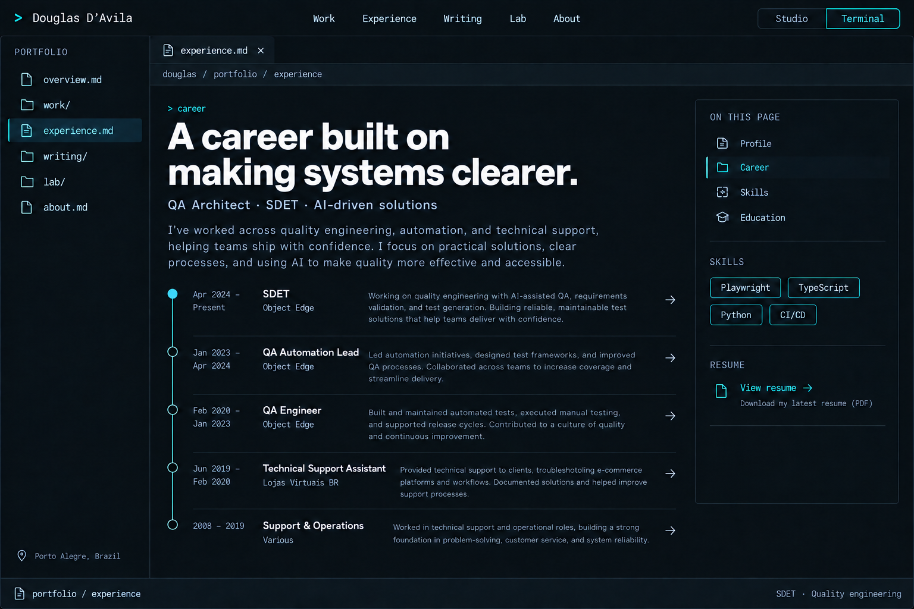
/experienceCareer history as elegant vertical git-log-inspired timeline, readable prose not code. Heading A career built on making systems clearer. Top profile QA Architect · SDET · AI-driven solutions. Roles: SDET, Object Edge, Apr 2024–Present; QA Automation Lead, Object Edge, Jan 2023–Apr 2024; QA Engineer, Object Edge, Feb 2020–Jan 2023; Technical Support Assistant, Lojas Virtuais BR, Jun 2019–Feb 2020; Support & Operations, 2008–2019. Latest expanded with AI-assisted QA, requirements validation, test generation. Side index Profile, Career, Skills, Education. Skills strip Playwright / TypeScript / Python / CI/CD. Resume link.
Latest role expanded; other role details use accessible disclosures. In-page outline becomes a compact jump menu on mobile; retain all responsibilities, skills, education, credentials and languages below the illustrated viewport.
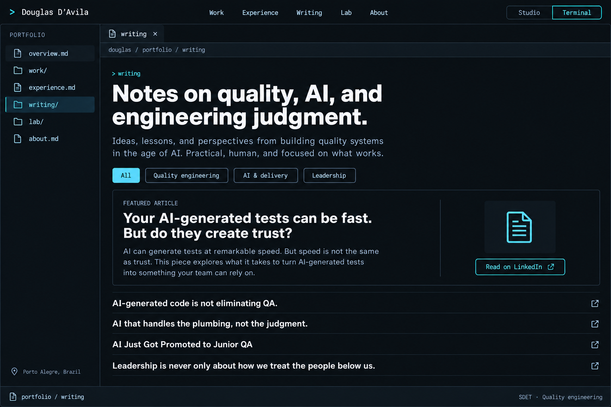
/writingReading-focused article index. Heading Notes on quality, AI, and engineering judgment. Featured article Your AI-generated tests can be fast. But do they create trust? with Read on LinkedIn external link. Topic controls All / Quality engineering / AI & delivery / Leadership. Article rows AI-generated code is not eliminating QA.; AI that handles the plumbing, not the judgment.; AI Just Got Promoted to Junior QA; Leadership is never only about how we treat the people below us. Clear external-link indicators. No invented dates or reading-time metrics.
Preserve topic query parameter, browser Back behavior, dates and excerpts from the collection. Announce result count and show Clear filters when empty. Filters wrap on mobile; external destinations remain LinkedIn.
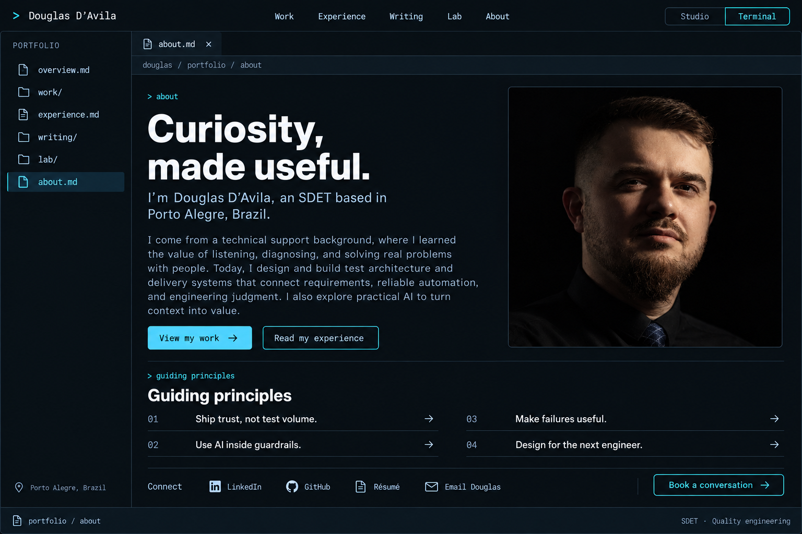
/aboutHeading Curiosity, made useful. Human-centered spacious prose I’m Douglas D’Avila, an SDET based in Porto Alegre, Brazil. Describe technical support roots, test architecture, delivery systems, practical AI. Right portrait frame use attached actual portrait, preserve person identity. Guiding principles numbered rows Ship trust, not test volume.; Use AI inside guardrails.; Make failures useful.; Design for the next engineer. Footer links LinkedIn, GitHub, Résumé and Email Douglas / Book a conversation. No invented biography.
Use the original portrait asset directly in implementation. Stack introduction then portrait on mobile. Preserve the four complete principle descriptions and all contact links below fold.
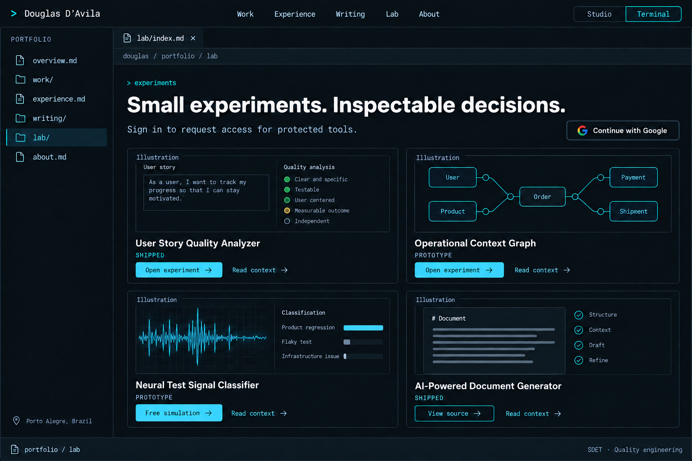
/labExperiment launcher heading Small experiments. Inspectable decisions. Compact access strip Sign in to request access for protected tools, Continue with Google. Four experiments with distinct illustrative preview panels, clearly labeled Illustration: User Story Quality Analyzer shipped Open experiment; Operational Context Graph prototype Open experiment; Neural Test Signal Classifier prototype Free simulation; AI-Powered Document Generator shipped View source (no hosted experiment). Each has Read context link. Spacious 2 by 2 composition.
Show signed-out, pending, approved, denied/revoked, exhausted and paused access states. Public browsing remains usable. Classifier stays free; generator links to source. One column on mobile.
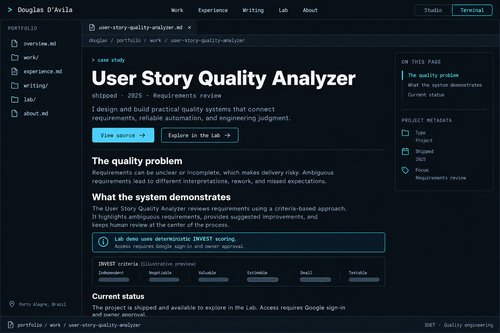
/work/user-story-evaluatorReadable case study editor document. Title User Story Quality Analyzer. Metadata shipped · 2025 · Requirements review. Sections The quality problem; What the system demonstrates; Current status. Explain ambiguous requirements, criteria-based review, suggested improvements and human review. Highlight callout Lab demo uses deterministic INVEST scoring. Access requires Google sign-in and owner approval. Illustrative preview of six INVEST bars without invented results. Buttons View source and Explore in the Lab. Right document outline and project metadata.
Use actual Markdown description and all sections. Outline collapses above article on mobile. Keep deterministic-demo callout and both existing destinations.
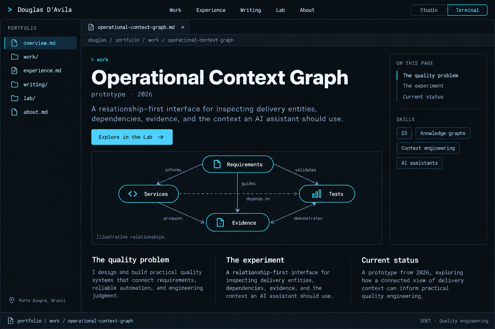
/work/context-graphReadable case study Title Operational Context Graph. prototype · 2026. Lead A relationship-first interface for inspecting delivery entities, dependencies, evidence, and the context an AI assistant should use. Big carefully spaced illustrative connected graph with Requirements, Tests, Services, Evidence nodes, explicitly captioned Illustrative relationships. Sections The quality problem / The experiment / Current status. Explore in the Lab action. Right document outline, skills D3 / Knowledge graphs / Context engineering / AI assistants.
Retain actual Markdown prose. Illustrative preview is not the operational dataset. Correct Work selection in explorer. On mobile outline precedes prose and diagram gets a readable stacked equivalent.
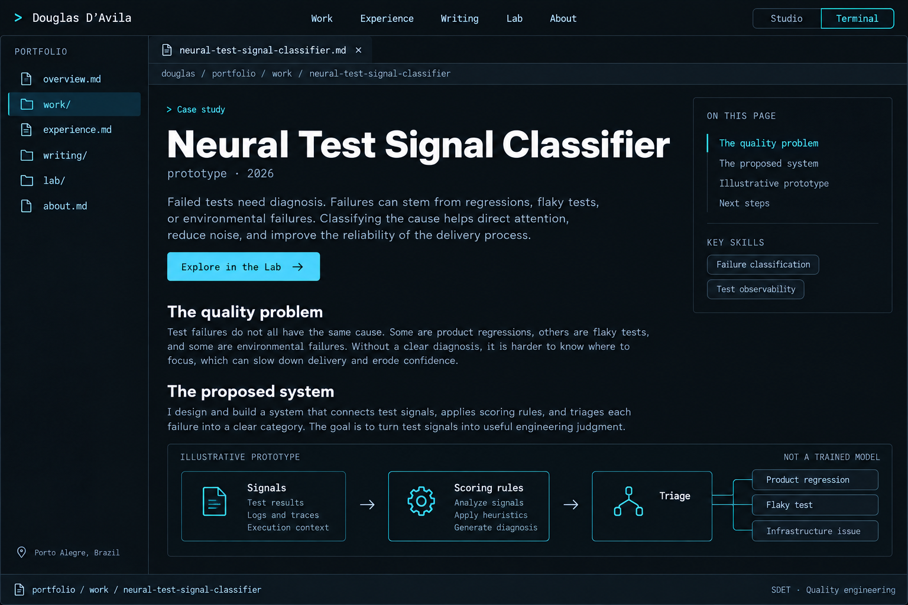
/work/neural-test-signal-classifierCase study Title Neural Test Signal Classifier. prototype · 2026. Explain failed tests need diagnosis: regressions, flaky tests, environmental failures. Sections The quality problem and The proposed system. Distinct schematic Signals → Scoring rules → Triage, explicitly labeled Illustrative prototype, not a trained model. Three output labels Product regression / Flaky test / Infrastructure issue without invented live metrics. Explore in the Lab button. Right document outline and skills Failure classification / Test observability.
Retain actual proposal/prototype language, no inferred production ML. Output categories are product_regression, flaky_test and infra_issue. Diagram stacks vertically on mobile.
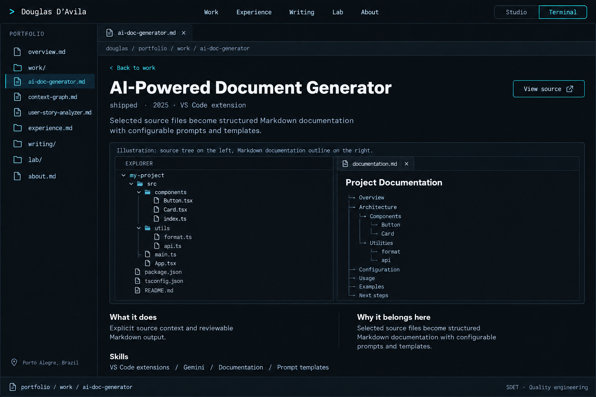
/work/ai-document-generatorCase study Title AI-Powered Document Generator. shipped · 2025 · VS Code extension. Lead Selected source files become structured Markdown documentation with configurable prompts and templates. Large illustrative split preview labeled Illustration: source tree on left, Markdown documentation outline on right. Sections What it does and Why it belongs here. Supporting text Explicit source context and reviewable Markdown output. Skills VS Code extensions / Gemini / Documentation / Prompt templates. View source external button only, no hosted run button.
Use source-file → Markdown preview as an illustration. Only existing View source action; no invented hosted generator. Preview panes stack on mobile.
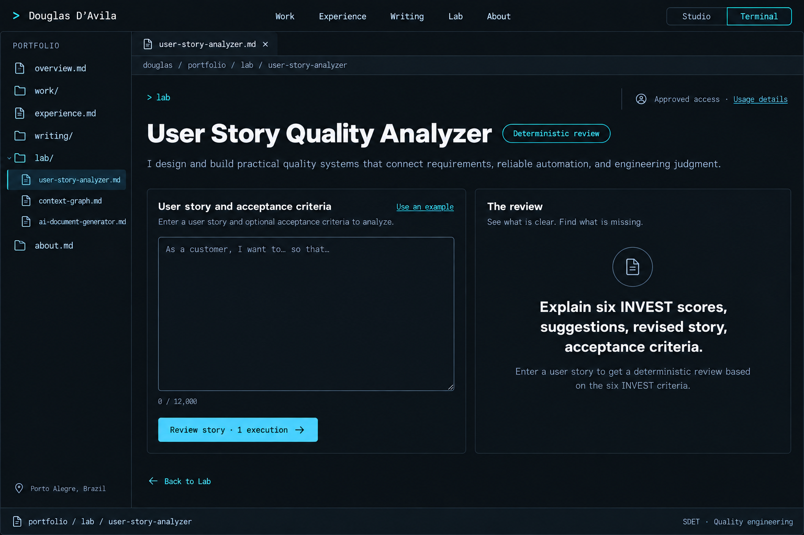
/lab/user-story-analyzerOperational full-width workspace with compact or collapsed site explorer. Title User Story Quality Analyzer; badge Deterministic review. Account disclosure Approved access · Usage details, no invented account data. Two equal input and output panes. Left label User story and acceptance criteria, large empty textarea placeholder As a customer, I want to… so that…, Use an example, 0 / 12,000, Review story · 1 execution. Right heading The review, calm empty state See what is clear. Find what is missing. Explain six INVEST scores, suggestions, revised story, acceptance criteria. No fake completed output. Footer Back to Lab.
Initial empty, example loaded, validation, busy, success, service error and retry states. Disable review for empty input, busy state or unavailable allowance. Keep retry identity and existing execution accounting. Result shows six INVEST scores, suggestions, revised story, acceptance criteria, missing context and JSON download. Mobile places input before review; announce completion without forced scrolling.
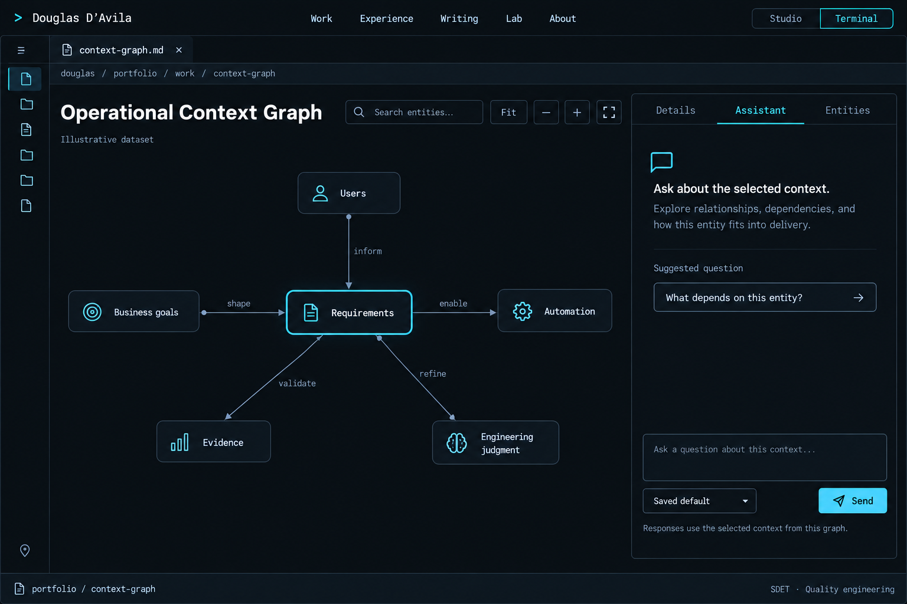
/lab/context-graphOperational graph workspace maximize usable canvas, collapse portfolio explorer to thin rail. Title Operational Context Graph. Toolbar search entities, Fit, Zoom − +, Expand workspace, compact Account & usage disclosure. Large graph canvas with legible sparse connected example delivery entities with explicit Illustrative dataset label. Right bounded inspector around 380px with tabs Details / Assistant / Entities, Assistant selected. Empty assistant text Ask about the selected context. Suggested question button What depends on this entity? Composer Ask a question about this context, model selector Saved default, Send button. Model names unspecified. No fabricated AI answer. Cyan selected graph node, thin quiet edges. Selection does not require page scroll.
Preserve actual dataset, account disclosure, details/assistant/entities tabs, node selection, zoom, citations, submitted context, draft and conversation. Do not send suggested questions automatically. Show loading, no search matches, dataset error, model unavailable, sending, answer, failure and retry. Mobile uses existing half-height expandable inspector sheet with close button; visual-viewport-aware composer. Escape closes inspector before exiting expanded workspace.
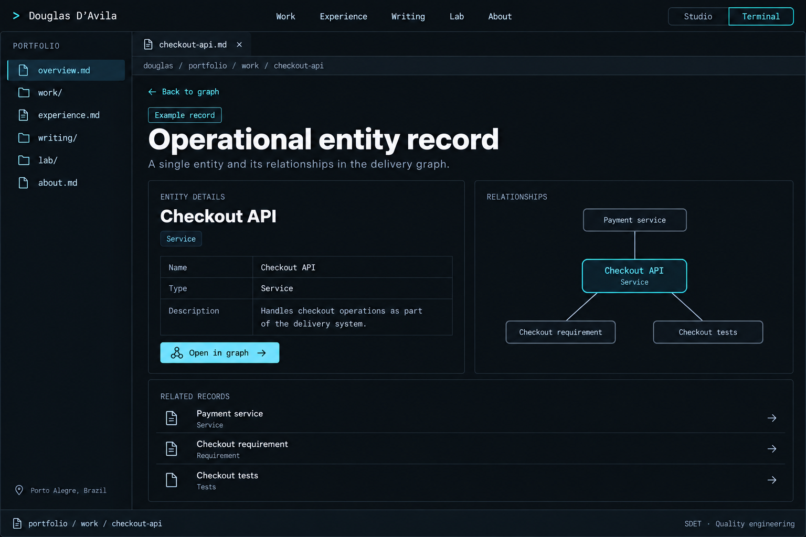
/lab/context-graph/entityStandalone entity record page. Title Operational entity record, Back to graph link. Explicit Example record badge so example is not represented as actual data. Entity Checkout API, type Service. Two-column detail with attributes table Name / Type / Description and related records list Payment service / Checkout requirement / Checkout tests. Minimal relationship schematic on right. Clear Open in graph action. Inspector-style information hierarchy. No fake health metrics, ownership people, or production status.
Entity query parameter remains the identity source; example screenshot is not new dataset content. Support missing/unknown ID, unavailable data and no relationships. Open in graph preserves selection. Stack attributes, relationships and connected records on mobile.
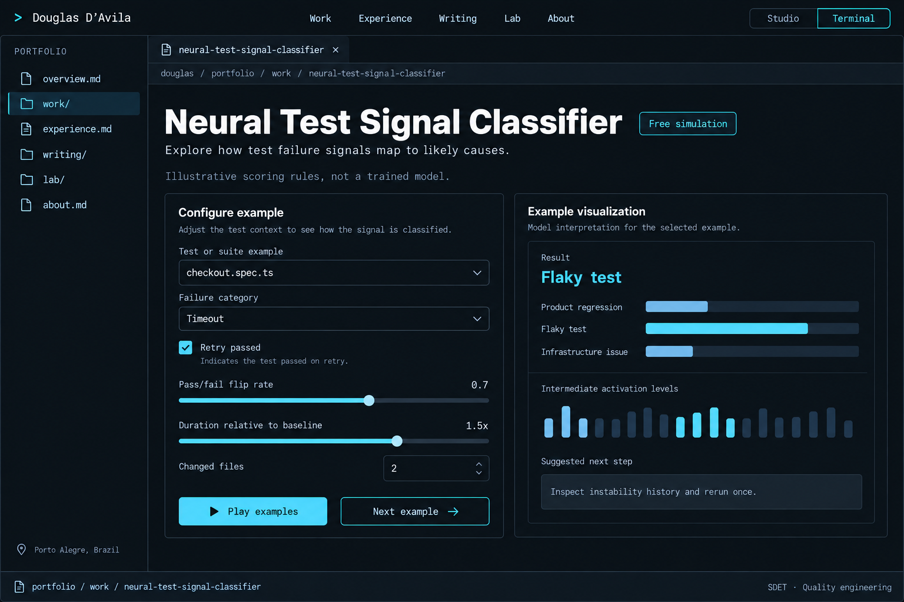
/lab/neural-test-signal-classifierOperational tool two panes. Title Neural Test Signal Classifier, badge Free simulation. Visible disclaimer Illustrative scoring rules, not a trained model. Left controls Test or suite example checkout.spec.ts, Failure category dropdown Timeout, Retry passed checkbox checked, Pass/fail flip rate slider 0.7, Duration relative to baseline 1.5x, Changed files 2. Buttons Play examples and Next example. Right illustration labeled Example visualization, result Flaky test, horizontal bars labeled Product regression / Flaky test / Infrastructure issue without exact percentages; Intermediate activation levels and Suggested next step Inspect instability history and rerun once. No production confidence claims.
Keep existing scoring rules and controls: text input for test name, select for category, checkbox for retry, three range controls. Show three named intermediate activations, three actual calculated likelihoods, and next step. Examples play only on explicit click; pause available and reduced motion respected. Stack controls above results on mobile.
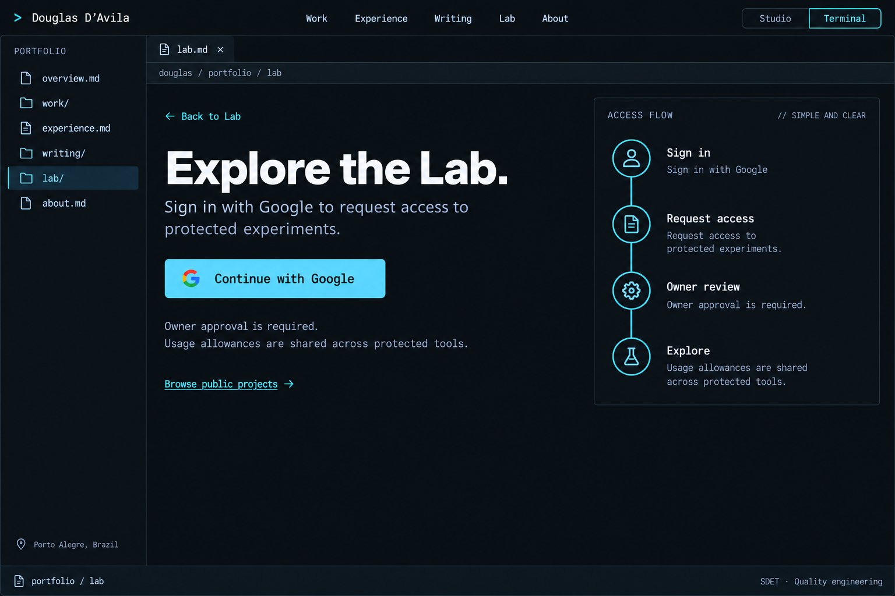
/loginCalm compact account access view within same shell. Back to Lab. Heading Explore the Lab. Text Sign in with Google to request access to protected experiments. Continue with Google button. Clear note Owner approval is required. Usage allowances are shared across protected tools. Secondary Browse public projects link. Right minimal schematic Sign in → Request access → Owner review → Explore. No email/password fields, no fake Google consent screen, no false access granted.
Keep Google OAuth and safe return path. Distinguish signed-out, requesting, pending approval, approved, denied/revoked and service-error states. Clear retry with input/context retained. Mobile is a compact stacked access flow.
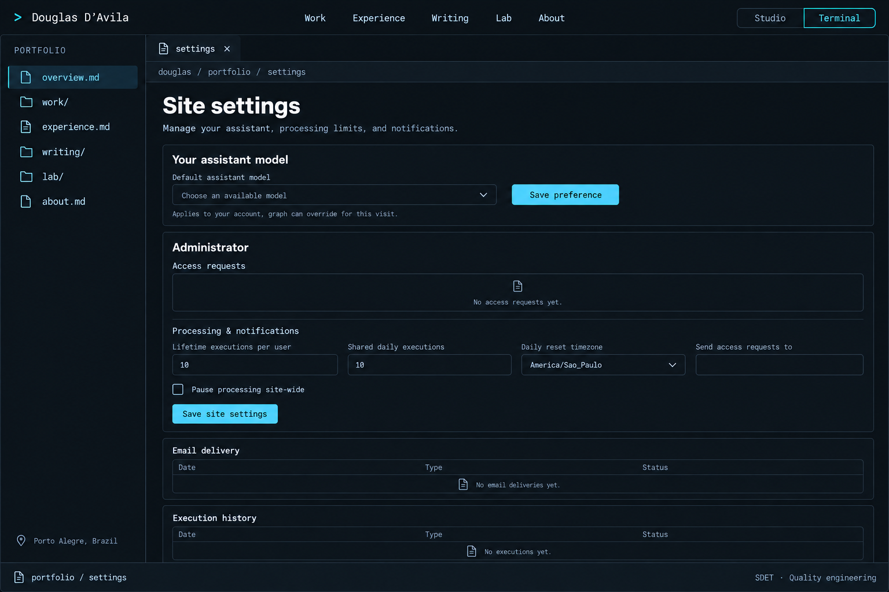
/settingsSettings page with compact shell. Heading Site settings. Top Your assistant model, Default assistant model dropdown placeholder Choose an available model, Save preference; note Applies to your account, graph can override for this visit. Below clearly bounded Administrator section with Access requests empty state No access requests yet. Processing & notifications form Lifetime executions per user 10, Shared daily executions 10, Daily reset timezone America/Sao_Paulo, Send access requests to empty field, Pause processing site-wide unchecked, Save site settings. Bottom Email delivery and Execution history empty rows. No real private emails, user identities or invented models.
Approved users see personal model preference; administrator tools and histories are rendered only for verified admins. Load model catalog from verified backend; loading/empty/failure disables save as appropriate. Preserve settings validation, save/busy/success/failure, access-review actions, notification retry and history tables. Mobile forms stack; wide tables scroll inside their own labeled region.
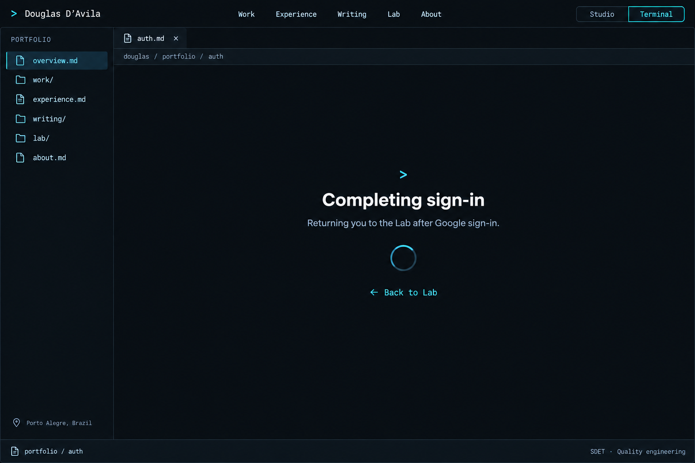
/auth/callbackVery restrained auth return screen in same branded editor shell with theme switcher. Centered compact content, cyan > prompt, heading Completing sign-in, text Returning you to the Lab after Google sign-in. Small subtle progress indicator. Back to Lab link. Generous negative space. Do not display successful approval or fake auth logs. Single loading state.
Loading only during real session exchange. On success navigate to safe saved return path; on cancellation, incomplete/expired link or exchange failure show clear error and Sign in again. Keep theme preference during OAuth redirect. Mobile uses one compact status panel.
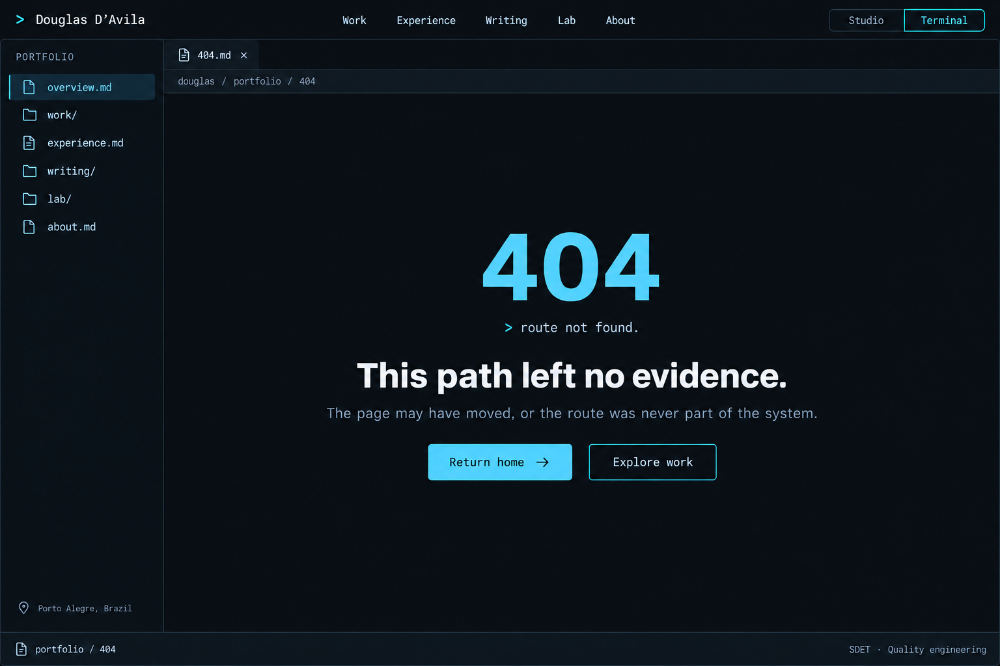
/404Elegant missing route page within same header explorer and editor frame. Tab missing-route. Large restrained cyan 404, small prompt > route not found. Heading This path left no evidence. Text The page may have moved, or the route was never part of the system. Primary Return home button, secondary Explore work. No fake stack traces, no error overload. Spacious minimal composition.
Use genuine 404 handling and existing copy; Return home and Explore work remain normal links. Do not mark Home current on missing route. Static recovery content works without JavaScript.